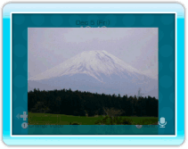

You can show photos saved on an SD Card or on your Wii Message Board to the people you are in a conversation with.
14 |
Showing Photos |
 |

Once the photo has been received by the other members of your conversation group, it will be displayed in the Conversation Room and will not be viewable in the Lobby.
|
 After selecting DIGITAL CAMERA/CELL PHONE, select VIEW to display the photos on your SD Card. Choose the photo you want to show your friends.
You can use
After selecting DIGITAL CAMERA/CELL PHONE, select VIEW to display the photos on your SD Card. Choose the photo you want to show your friends.
You can use  |
 |
 |